第 7 章 输出反馈
可以把物理实现问题分成两个阶段：先根据 \(t\le t_1\) 时对 \(y(t)\) 的了解，计算状态的“最佳近似” \(\hat x(t_1)\)；再在给定 \(\hat x(t_1)\) 的基础上计算 \(u(t_1)\)。
本章说明如何借助观测器使用输出反馈来改变系统动态。我们将引入可观性的概念，并说明如果系统可观，就可以从系统输入和输出的测量值恢复状态。接着会说明怎样设计一个基于观测器状态反馈的控制器。本章还会证明上面引文中的一个重要概念：分离原理。本章推导出的控制器结构相当一般，许多其他设计方法也会得到这种结构。
7.1 可观性
上一章第 6.2 节说明了，如果系统可达，并且所有状态都可测量，那么可以找到状态反馈律，使闭环系统具有期望特征值。在许多场合，假设所有状态都能测量是很不现实的。本节研究怎样利用数学模型和少量测量来估计状态。我们会看到，状态计算可以由一个称为观测器的动态系统完成。
可观性的定义
考虑由微分方程描述的系统
其中 \(x\in\mathbb{R}^n\) 是状态，\(u\in\mathbb{R}^p\) 是输入，\(y\in\mathbb{R}^q\) 是测得输出。我们希望从系统输入和输出估计系统状态，如图 7.1 所示。在某些情形下，会假设只有一个测量信号，也就是 \(y\) 是标量，\(C\) 是行向量。这个信号可能受到噪声 \(n\) 污染，不过我们先从无噪声情形开始。观测器给出的状态估计记为 \(\hat x\)。
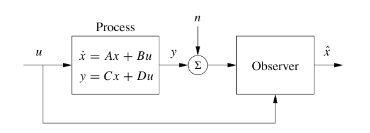
定义 7.1 可观性 如果对任意 \(T>0\)，都能通过区间 \([0,T]\) 上对 \(y(t)\) 和 \(u(t)\) 的测量确定系统状态 \(x(T)\)，则称该线性系统可观。
上面的定义也适用于非线性系统，并且这里讨论的一些结果可以推广到非线性情形。
可观性问题有许多重要应用，并不限于反馈系统。如果一个系统可观，那么它内部没有隐藏动态；通过随时间观察输入和输出，就可以理解系统中发生的一切。正如后面会看到的，可观性在实践中很重要，因为它决定了一组传感器是否足以控制一个系统。传感器结合数学模型，也可以看成一种虚拟传感器，用来给出那些没有直接测量的变量的信息。把来自多个传感器的信号与数学模型协调起来的过程，也称为传感器融合。
可观性检验
上一章讨论可达性时，我们忽略输出并关注状态。类似地，这里一开始忽略输入，关注自治系统：
我们希望理解何时可以从输出观测确定状态。
输出本身给出了状态在矩阵 \(C\) 各行向量上的投影。如果矩阵 \(C\) 可逆，可观性问题立刻解决。如果矩阵不可逆，可以对输出求导：
于是从输出导数中得到状态在矩阵 \(CA\) 各行向量上的投影。继续这一过程，得到
因此，如果可观性矩阵
有 \(n\) 个线性无关的行，就可以确定状态。事实证明，不需要考虑高于 \(n-1\) 阶的导数，这正是 Cayley-Hamilton 定理的一个应用，见习题 6.10。
这个计算可以很容易推广到有输入的系统。此时状态由输入、输出及其高阶导数的线性组合给出，可观性判据不变。这个情形留给读者作为练习。
在实践中，如果存在测量噪声，对输出求导会产生很大误差，因此上面勾勒的方法并不特别实用。下一节会更详细地处理这个问题。现在先给出下面基本结果。
定理 7.1 可观性秩条件 形如 (7.1) 的线性系统可观，当且仅当可观性矩阵 \(W_o\) 满秩。
证明：可观性秩条件的充分性来自上面的分析。为了证明必要性，假设系统可观，但 \(W_o\) 不满秩。令 \(v\in\mathbb{R}^n\)、\(v\ne0\) 为 \(W_o\) 零空间中的向量，即 \(W_ov=0\)。若令 \(x(0)=v\) 为系统初始条件，并取 \(u=0\)，则输出为 \(y(t)=Ce^{At}v\)。由于 \(e^{At}\) 可以写成 \(A\) 的幂级数，并且由 Cayley-Hamilton 定理，\(A^n\) 及更高次幂都可以写成较低次 \(A\) 的组合，因此输出恒等于零。若这一步不够明显，读者可以补全缺失细节。不过，当系统输入和输出都为 0 时，\(\hat x=0\) 对所有时间都是一个可行状态估计，而这显然不正确，因为 \(x(0)=v\ne0\)。由反证法可知，若系统可观，则 \(W_o\) 必须满秩。
例 7.1 隔室模型
考虑图 3.18a 中的双隔室模型，但假设可以测量第一个隔室中的浓度。系统由线性模型描述：
第一个隔室表示血浆中的药物浓度，第二个隔室表示药物发挥作用的组织中的药物浓度。为了判断能否通过血浆测量确定组织隔室中的浓度，构造可观性矩阵：
当 \(k_1\ne0\) 时，两行线性无关。因此在这个条件下，可以从血液中药物浓度的测量值确定活性隔室中的药物浓度。
理解系统不可观的机制也很有用。图 7.2 显示了这样一个系统。该系统由两个相同系统组成，二者输出相加。直观上看，不可能从总输出推断两个系统的状态，因为无法从总和中区分每个子系统的输出贡献。这个结论也可以形式化证明，见习题 7.2。
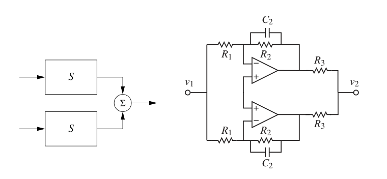
可观标准形
和可达性一样，某些标准形有助于研究可观性。如果线性单输入单输出状态空间系统的动态为
则称系统处于可观标准形。这个定义可以推广到多输入系统，唯一差别是乘以 \(u\) 的向量会被矩阵替代。
图 7.3 是可观标准形系统的框图。和可达标准形一样，系统描述中的系数直接出现在框图中。可观标准形系统的特征多项式为
可以通过研究框图来理解可观标准形系统的可观性。如果输入 \(u\) 和输出 \(y\) 可用，那么状态 \(z_1\) 显然可以计算。对 \(z_1\) 求导，可以得到生成 \(z_1\) 的积分器输入，于是可以得到
继续下去，就能计算所有状态。不过，这个计算需要对信号求导。
更形式地检查可观性，可以计算可观标准形系统的可观性矩阵：
其中星号表示具体数值并不重要的项。这个矩阵的行线性无关，因为它是下三角矩阵，因此 \(W_o\) 满秩。一个直接但繁琐的计算表明，可观性矩阵的逆具有简单形式：
和可达性情形一样，如果系统可观，则总存在一个变换 \(T\)，把系统转化为可观标准形。这对证明很有用，因为它允许我们不失一般性地假设系统处于可观标准形。需要注意，可观标准形在数值上可能条件较差。
7.2 状态估计
定义可观性以后，现在回到如何为系统构造观测器的问题。我们希望寻找一种可表示为线性动态系统的观测器，它以被观测系统的输入和输出作为输入，并产生系统状态估计。也就是说，希望构造形如
的动态系统，其中 \(u\) 和 \(y\) 是原系统输入和输出，\(\hat x\in\mathbb{R}^n\) 是状态估计，并且满足
观测器
为简化说明，考虑式 (7.1) 中 \(D=0\) 的系统：
一种最直接的想法，是用正确输入仿真系统方程，从而确定状态。状态估计可由
给出。为了研究这个估计的性质，引入估计误差
由式 (7.6) 和式 (7.7) 可得
如果矩阵 \(A\) 的所有特征值都在左半平面，误差 \(\tilde x\) 将趋于零，因此式 (7.7) 是一个动态系统，其输出收敛到系统 (7.6) 的状态。
式 (7.7) 给出的观测器只使用过程输入 \(u\)，测得信号并没有出现在方程中。此外，还要求系统本身稳定；本质上，我们的估计器之所以收敛，是因为观测器和被估计系统的状态都趋于零。这在控制设计中用处有限，因为我们希望估计快速收敛到非零状态，以便控制器使用。因此需要修改观测器，使输出被用进去，并且其收敛性质可以设计得相对系统动态更快。这个版本也适用于不稳定系统。
考虑观测器
这可以看成式 (7.7) 的推广。通过加入 \(L(y-C\hat x)\) 项，测量输出被反馈进来。这个项与观测到的输出和观测器预测输出之间的差成比例。由式 (7.6) 和式 (7.8) 可得
如果可以选择矩阵 \(L\)，使矩阵 \(A-LC\) 的所有特征值都具有负实部，则误差 \(\tilde x\) 将趋于零。收敛速度由这些特征值的适当选择决定。
注意，寻找状态反馈和寻找观测器的问题非常相似。通过特征值配置设计状态反馈，等价于寻找矩阵 \(K\)，使 \(A-BK\) 具有给定特征值。设计具有指定特征值的观测器，等价于寻找矩阵 \(L\)，使 \(A-LC\) 具有给定特征值。由于矩阵和它的转置有相同特征值，可以建立下面对应关系：
观测器设计问题是状态反馈设计问题的对偶。利用定理 6.3 的结果，可得下面观测器设计定理。
定理 7.2 通过特征值配置设计观测器 考虑系统
并假设系统为单输入单输出。令
为 \(A\) 的特征多项式。如果系统可观，则动态系统
是该系统的观测器。选择 \(L\) 为
其中
\(\tilde W_o\) 是可观标准形对应的可观性矩阵逆中出现的三角系数矩阵。所得观测器误差 \(\tilde x=x-\hat x\) 由具有特征多项式
的微分方程控制。
动态系统 (7.10) 称为系统 (7.9) 的状态观测器，因为它会根据系统输入和输出生成状态近似。这个观测器形式比式 (7.3) 中纯粹求导的形式实用得多。
例 7.2 隔室模型
考虑例 7.1 中的隔室模型，其矩阵为
可观性矩阵已经在例 7.1 中计算过，结论是当 \(k_1\ne0\) 时系统可观。动态矩阵的特征多项式为
令观测器期望特征多项式为 \(s^2+p_1s+p_2\)。由式 (7.11) 得到观测器增益
注意，可观性条件 \(k_1\ne0\) 在这里是必要的。图 7.4b 用仿真说明观测器行为。可以看到，观测浓度逐渐接近真实浓度。
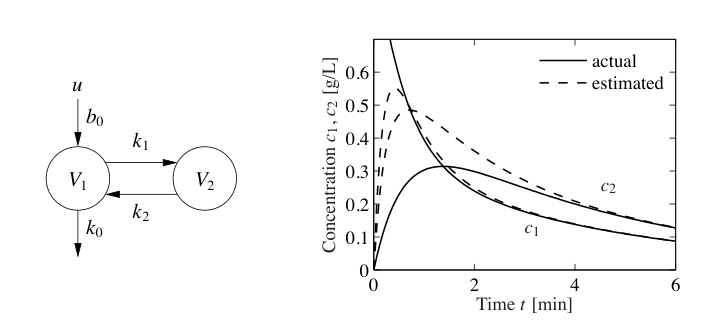
观测器是一个动态系统，其输入是过程输入 \(u\) 和过程输出 \(y\)。估计值的变化率由两项组成。一项 \(A\hat x+Bu\) 是把 \(\hat x\) 代入模型后算出的变化率；另一项 \(L(y-\hat y)\) 与测得输出 \(y\) 和估计输出 \(\hat y=C\hat x\) 之间的误差 \(e=y-\hat y\) 成比例。观测器增益 \(L\) 是一个矩阵，它说明误差 \(e\) 如何被加权并分配到各个状态中。因此，观测器把测量与系统动态模型结合起来。图 7.5 给出了观测器框图。
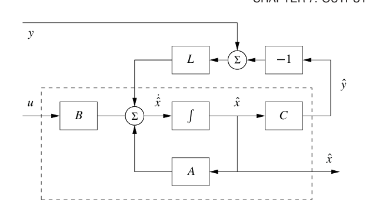
计算观测器增益
对简单低阶问题，把观测器增益 \(L\) 的元素作为未知参数，再求出使特征多项式达到期望形式的数值，会很方便。下面例子说明这种方法。
例 7.3 车辆转向
例 5.12 和例 6.4 中推导的车辆转向归一化线性模型，给出了横向路径偏差 \(y\) 与转向角 \(u\) 之间的状态空间模型：
回忆状态 \(x_1\) 表示横向路径偏差，\(x_2\) 表示转向速率。现在推导一个观测器，用系统模型从测得路径偏差中确定转向速率。
可观性矩阵为
也就是单位矩阵。因此系统可观，特征值配置问题可以求解。我们有
其特征多项式为
若希望观测器特征多项式为
则观测器增益应选为
观测器为
图 7.6 仿真了车辆在弯曲道路上行驶时的观测器。归一化模型中，车辆长度就是时间单位。图中显示，观测器误差约在 3 个车长内收敛。
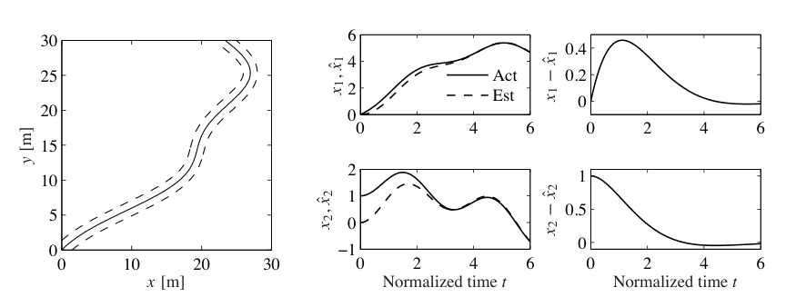
对高阶系统，需要进行数值计算。状态反馈设计和观测器设计之间的对偶性意味着，状态反馈的计算算法也可用于观测器设计；只需使用动态矩阵和输出矩阵的转置。MATLAB 命令 acker 本质上直接实现了定理 7.2 中的计算，可用于单输出系统。MATLAB 命令 place 可用于多输出系统，数值条件也更好。
7.3 使用估计状态控制
本节考虑如下状态空间系统：
注意，我们假设系统没有直接项，也就是 \(D=0\)。这常常是现实假设。如果直接项与具有比例作用的控制器同时存在，会产生代数环。第 8.3 节会讨论这一点。即使存在直接项，问题也可以解决，只是计算更复杂。
我们希望在只有输出可测量时为系统设计反馈控制器。和前面一样，假设 \(u\) 和 \(y\) 是标量，并且系统可达、可观。第 6 章中，在所有状态都可测量的情况下，我们找到形如
的反馈。第 7.2 节中，我们又建立了一个观测器，可以根据输入和输出生成状态估计 \(\hat x\)。本节把这些想法结合起来，为只有输出可用于反馈的系统寻找能给出期望闭环特征值的反馈。
如果并非所有状态都能测量，很自然地可以尝试反馈
其中 \(\hat x\) 是状态观测器的输出：
由于系统 (7.13) 和观测器 (7.15) 的状态维数都是 \(n\)，闭环系统的状态维数为 \(2n\)，状态为 \((x,\hat x)\)。状态演化由式 (7.13) 到式 (7.15) 描述。为了分析闭环系统，用
替换状态变量 \(\hat x\)。用式 (7.13) 减去式 (7.15)，得到
回到过程动态，把式 (7.14) 中的 \(u\) 代入式 (7.13)，并用式 (7.16) 消去 \(\hat x\)，得到
因此闭环系统由
控制。注意，代表观测器误差的状态 \(\tilde x\) 不受参考信号 \(r\) 影响。这是我们希望的，因为不希望参考信号产生观测器误差。
由于动态矩阵是块三角的，闭环系统特征多项式为
这个多项式是两个项的乘积：一个是状态反馈得到的闭环系统特征多项式，另一个是观测器误差的特征多项式。由启发式想法得到的反馈 (7.14)，因此为特征值配置问题提供了一个简洁解法。结果概括如下。
定理 7.3 通过输出反馈配置特征值 考虑系统
由
描述的控制器，给出闭环系统特征多项式
如果系统可达且可观，这个多项式的根可以任意配置。
这个控制器非常符合直觉：它可以看成由两部分组成，一个状态反馈，一个观测器。控制器动态由观测器生成。反馈增益 \(K\) 可以像所有状态变量都可测量时那样计算，并且只依赖 \(A\) 和 \(B\)。观测器增益 \(L\) 只依赖 \(A\) 和 \(C\)。输出反馈的特征值配置可以分解为一个状态反馈的特征值配置和一个观测器的特征值配置，这个性质称为分离原理。
图 7.7 显示了控制器框图。注意，控制器包含被控对象的动态模型。这称为内模原理：控制器包含被控制过程的模型。
例 7.4 车辆转向
再次考虑例 6.4 中车辆转向的归一化线性模型。转向角 \(u\) 到横向路径偏差 \(y\) 的动态由状态空间模型 (7.12) 给出。把例 6.4 中推导的状态反馈与例 7.3 中确定的观测器结合，得到控制器
消去变量 \(u\)，得到
这个控制器是一个二阶动态系统，有两个输入 \(y,r\)，一个输出 \(u\)。图 7.8 显示了车辆沿弯曲道路行驶时系统的仿真。由于使用的是归一化模型，长度单位为车辆长度，时间单位为车辆行驶一个车长所需时间。估计器初始时所有状态都设为零，但真实系统初始速度为 0.5。图中可见，估计值很快收敛到真实值。车辆跟踪道路中线的期望路径，但由于道路不规则，仍存在误差。引入前馈可以改善跟踪误差，见第 7.5 节。
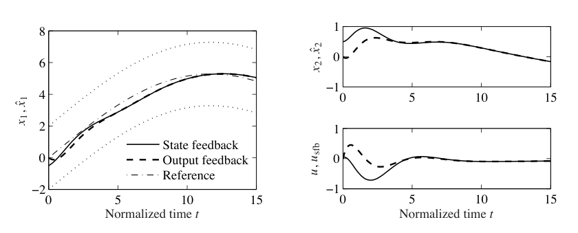
7.4 卡尔曼滤波
观测器在实践中的一个主要用途，是在测量含噪声时估计系统状态。前面的分析尚未处理噪声，而随机动态系统的完整处理超出了本书范围。本节简要介绍怎样用随机系统分析来构造观测器。为避免连续时间随机过程带来的复杂性，并尽量降低数学预备要求，主要讨论离散时间。本节假设读者具备随机变量和随机过程的基本知识，所需材料可见 Kumar 和 Varaiya [131] 或 Åström [15]。
考虑离散时间线性系统
其中 \(v[k]\) 和 \(w[k]\) 是高斯白噪声过程，满足
\(E\{v[k]\}\) 表示 \(v[k]\) 的期望值，\(E\{v[k]v^T[j]\}\) 表示相关矩阵。矩阵 \(R_v\) 和 \(R_w\) 分别是过程扰动 \(v\) 与测量噪声 \(w\) 的协方差矩阵。假设初始条件也建模为高斯随机变量：
希望在给定测量 \(\{y(\tau):0\le\tau\le t\}\) 的条件下，找到估计 \(\hat x[k]\)，使均方误差
最小。考虑与前面推导相同基本形式的观测器：
下面定理概括主要结果。
定理 7.4 卡尔曼，1961 考虑由式 (7.18) 给出动态，并由式 (7.19)、式 (7.20) 描述噪声过程和初始条件的随机过程 \(x[k]\)。使均方误差最小的观测器增益为
其中
证明这个结果之前，先看它的形式和作用。首先，卡尔曼滤波器具有递归滤波器的形式：给定时刻 \(k\) 的均方误差
就可以计算估计和误差如何变化。因此不需要保存旧输出值。进一步说，卡尔曼滤波器同时给出估计 \(\hat x[k]\) 和误差协方差 \(P[k]\)，所以可以看到估计有多可靠。还可以证明，卡尔曼滤波器从输出数据中提取了最大可能信息。若构造测得输出与估计输出之间的残差
则对 卡尔曼滤波器有
换句话说，误差是白噪声过程，因此误差中不再包含动态信息。
卡尔曼滤波器用途极广，即使过程、噪声或扰动非平稳，也可以使用。当系统平稳，并且 \(P[k]\) 收敛时，观测器增益为常数：
其中 \(P\) 满足
可以看到，最优增益同时依赖过程噪声和测量噪声，而且关系并不平凡。就像用 LQR 选择状态反馈增益一样，卡尔曼滤波器在给定噪声过程描述后，提供了一种系统地推导观测器增益的方法。常增益情形的解可用 MATLAB 的 dlqe 命令求得。
证明：我们希望最小化误差的均方
把这个量定义为 \(P[k]\)，并证明它满足式 (7.22) 中的递推。由定义，
令 \(R_\epsilon=R_w+CP[k]C^T\)，则
为了最小化这个表达式，选择
定理得证。
卡尔曼滤波器也可以用于连续时间随机过程。这个结果的数学推导需要更复杂的工具，但估计器最终形式相对直接。
考虑连续时间随机系统
其中 \(\delta(\tau)\) 是单位冲激函数。假设扰动 \(v\) 和噪声 \(w\) 为零均值高斯过程，但不一定平稳。希望在给定 \(\{y(\tau):0\le\tau\le t\}\) 的条件下，找到使
最小的估计 \(\hat x(t)\)。
定理 7.5 卡尔曼-布西，1961 最优估计器具有线性观测器形式
其中
并满足
和离散情形一样，当系统平稳且 \(P(t)\) 收敛时，观测器增益为常数：
其中
第二个方程是代数 Riccati 方程。
例 7.5 矢量推力飞机
考虑该系统的横向动态，也就是状态
给出的子系统。为了为系统设计 卡尔曼滤波器，必须包含过程扰动和传感器噪声的描述。因此把系统增广为
其中 \(F\) 表示扰动结构，包括线性化中忽略的非线性影响，\(v\) 表示扰动源，建模为零均值高斯白噪声，\(w\) 表示测量噪声，同样建模为零均值高斯白噪声。
本例中，取 \(F\) 为单位矩阵，并令扰动 \(v_i\)、\(i=1,\ldots,n\) 相互独立，协方差为 \(R_{ii}=0.1\)、\(R_{ij}=0\)、\(i\ne j\)。传感器噪声是一个随机变量，其协方差取为 \(R_w=10^{-3}\)。使用前面的同一组参数，得到 卡尔曼增益
估计器性能如图 7.9a 所示。可以看到，估计器虽然收敛到系统状态，但状态估计中存在显著超调，这可能导致闭环性能较差。
为了改善估计器性能，考察加入一个新输出测量的影响。假设除了测量横向位置 \(x\)，还测量飞行器姿态角 \(\theta\)。输出变为
若 \(w_1,w_2\) 是相互独立噪声源，并且各自协方差均为 \(10^{-3}\)，则最优估计器增益矩阵为
这些增益提供了良好的抗噪声能力和较高性能，如图 7.9b 所示。
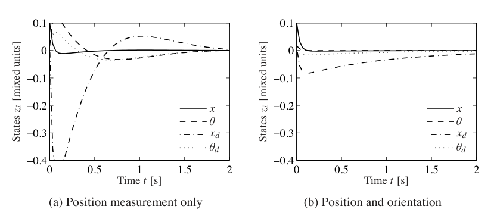
7.5 一般控制器结构
状态估计器和状态反馈是控制器的重要组成部分。本节加入前馈，得到一种一般控制器结构。它在控制理论中到处出现，也是大多数现代控制系统的核心。我们还会简要说明如何用计算机实现基于输出反馈的控制器。
前馈
本章和上一章一直强调反馈是减小跟踪误差的机制；参考值只是通过增益 \(k_r\) 加到状态反馈中。图 7.10 显示了一种更精细的方法，其中控制器由三部分构成：观测器、状态反馈和轨迹生成器。观测器基于模型和测得过程输入输出计算状态估计；状态反馈提供纠正输入；轨迹生成器生成所有状态的期望行为 \(x_d\) 以及前馈信号 \(u_{\mathrm{ff}}\)。
在没有扰动和建模误差的理想条件下，把信号 \(u_{\mathrm{ff}}\) 施加到过程中，就会产生期望行为 \(x_d\)。信号 \(x_d\) 可以由一个给出期望状态响应的系统生成。为了生成 \(u_{\mathrm{ff}}\)，还必须有过程动态逆模型。
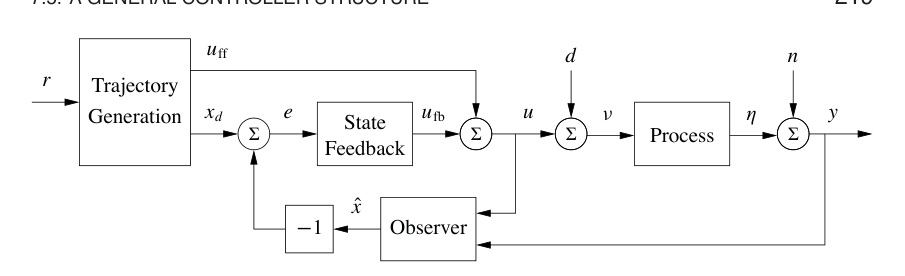
为了理解系统行为，先假设没有扰动，并且系统在常值参考信号下处于平衡，观测器状态 \(\hat x\) 等于过程状态 \(x\)。当参考信号改变时，\(u_{\mathrm{ff}}\) 和 \(x_d\) 会改变。由于初始状态正确，观测器会完美跟踪状态。因此估计状态 \(\hat x\) 等于期望状态 \(x_d\)，反馈信号 \(u_{\mathrm{fb}}=K(x_d-\hat x)\) 也为零。此时所有动作都由轨迹生成器给出的信号产生。如果存在扰动或建模误差，反馈信号会尝试修正。
这个控制器称为具有二自由度，因为命令信号响应和扰动响应被解耦。扰动响应由观测器和状态反馈决定，而命令信号响应由轨迹生成器，也就是前馈部分决定。
为了给出解析描述，从过程的完整非线性动态开始：
假设轨迹生成器能够计算期望轨迹 \((x_d,u_{\mathrm{ff}})\)，它满足动态 (7.23)，并满足
为了设计控制器，构造误差系统。令
并计算误差动态：
一般来说，这个系统是时变的。注意，由于框图中采用负反馈约定，图 7.10 中的误差符号可能与这里的 \(z\) 相反。
对轨迹跟踪，如果控制器做得好，可以假设误差较小，于是在 \(z=0\) 附近线性化：
很多时候，\(A(t)\) 和 \(B(t)\) 只依赖 \(x_d\)，此时写成 \(A(t)=A(x_d)\)、\(B(t)=B(x_d)\) 很方便。
现在假设 \(x_d\) 和 \(u_{\mathrm{ff}}\) 为常值，或相对于性能指标变化缓慢。这允许我们只考虑由 \((A(x_d),B(x_d))\) 给出的常值线性系统。如果为每个 \(x_d\) 设计状态反馈控制器 \(K(x_d)\)，就可以用反馈
调节系统。代回 \(z\) 和 \(v\) 的定义，控制器变为
这种控制器称为带前馈 \(u_{\mathrm{ff}}\) 的增益调度线性控制器。
最后考虑观测器。可以在观测器预测部分使用完整非线性动态，在校正项中使用线性化系统：
其中 \(L(\hat x)\) 是围绕当前估计状态线性化后得到的观测器增益。这种观测器称为扩展卡尔曼滤波器，已经被证明是估计非线性系统状态的非常有效方法。
生成前馈信号有许多方法，计算反馈增益 \(K\) 和观测器增益 \(L\) 也有许多不同方式。再次注意，内模原理仍然适用：控制器通过观测器包含了被控系统的模型。
例 7.6 车辆转向
为了说明怎样用二自由度设计改善系统性能，考虑图 7.11a 所示的汽车换道问题。
使用例 2.8 中推导的非归一化动态形式。以前轮后轮中心作为参考点，即 \(\alpha=0\)，动态可写为
其中 \(v\) 是车辆前进速度，\(\delta\) 是转向角。为了为系统生成轨迹，注意给定 \(x,y\) 时，可以通过下面方程求解系统状态和输入：
这五个方程有五个未知量 \(\theta,\dot\theta,v,\dot v,\delta\)，可以用三角关系和线性代数求解。因此，给定任意路径 \(x(t),y(t)\)，就可以计算系统可行轨迹。系统的这个特殊性质称为微分平坦性 [73, 74]。
为了寻找一条在时间 \(T\) 内从初始状态 \((x_0,y_0,\theta_0)\) 到最终状态 \((x_f,y_f,\theta_f)\) 的轨迹，需要路径 \(x(t),y(t)\) 满足
一种轨迹可通过选取
得到。把这些方程代入式 (7.25)，剩下的是关于 \(\alpha_i,\beta_i\)、\(i=0,1,2,3\) 的线性方程组。解出这些系数以后，再用式 (7.24) 求出 \(\theta_d,v_d,\delta_d\)，即可得到系统可行轨迹。
图 7.11b 显示了由一组更高阶方程生成的示例轨迹，这组方程还把初始和最终转向角设为零。注意，前馈输入显著不同于零，它让控制器能够在没有误差时直接命令执行转弯所需的转向角。
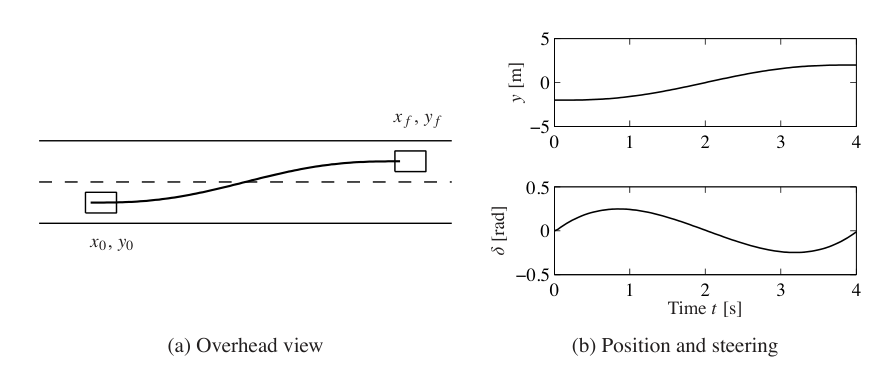
线性系统的 卡尔曼分解
本章和上一章已经看到，线性输入输出系统的两个基本性质是可达性和可观性。事实证明，这两个性质可以用于分类系统动态。关键结果是 卡尔曼分解定理，它说明线性系统可以分成四个子系统：\(\Sigma_{ro}\)，既可达又可观；\(\Sigma_{r\bar o}\)，可达但不可观；\(\Sigma_{\bar r o}\)，不可达但可观；以及 \(\Sigma_{\bar r\bar o}\)，既不可达又不可观。
先考虑矩阵 \(A\) 具有互异特征值的特殊情形。此时可以找到一组坐标，使 \(A\) 矩阵为对角形式。再适当重排状态，系统可写为
所有满足 \(B_k\ne0\) 的状态 \(x_k\) 都可达，所有满足 \(C_k\ne0\) 的状态都可观。如果把初始状态设为零，或者在 \(A\) 稳定时等价地考察稳态响应，则 \(x_{\bar r o}\) 和 \(x_{\bar r\bar o}\) 对应状态为零，而 \(x_{r\bar o}\) 不影响输出。因此输出 \(y\) 可由下面系统确定：
所以从输入输出角度看，只有既可达又可观的动态才重要。图 7.12a 给出了说明这个性质的系统框图。
卡尔曼分解的一般情形更复杂，需要一些额外线性代数，见 卡尔曼、Ho 和 Narendra 的原始论文 [118]。关键结果是，状态空间仍可分解为四部分，但会出现额外耦合，使方程具有形式
其中星号表示适当维数的块矩阵。系统的输入输出响应由
给出，这正是既可达又可观子系统 \(\Sigma_{ro}\) 的动态。系统框图如图 7.12b 所示。
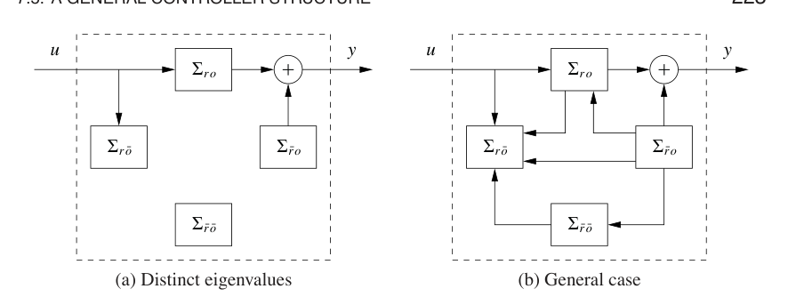
下面例子说明 卡尔曼分解。
例 7.7 系统与基于观测器状态反馈的控制器
考虑系统
定理 7.3 给出了基于观测器状态反馈的控制器：
引入状态 \(x\) 和 \(\tilde x=x-\hat x\)，闭环系统可写为
这是类似图 7.12b 的 卡尔曼分解，但只有两个子系统 \(\Sigma_{ro}\) 和 \(\Sigma_{\bar r o}\)。以状态 \(x\) 表示的子系统 \(\Sigma_{ro}\) 可达且可观；以状态 \(\tilde x\) 表示的子系统 \(\Sigma_{\bar r o}\) 不可达但可观。状态 \(\tilde x\) 不能由参考信号 \(r\) 到达是自然的，因为设计一个会让命令信号变化产生观测器误差的系统并没有意义。参考 \(r\) 与输出 \(y\) 的关系为
这与具有完整状态反馈的系统相同。
计算机实现
到目前为止得到的控制器都用普通微分方程描述。它们可以直接用模拟元件实现，无论是电子电路、液压阀还是其他物理装置。由于现代工程应用中的大多数控制器都用计算机实现，下面简要讨论怎样做到这一点。
计算机控制系统通常周期性运行：每个周期中，传感器信号被采样并由 A/D 转换器转为数字形式，计算控制信号，得到的输出再由 D/A 转换器转成模拟形式供执行器使用，如图 7.13 所示。为了说明在这种环境中实现反馈的主要原则，考虑式 (7.14) 和式 (7.15) 描述的控制器：
第一个方程只包含加法和乘法，因此可以直接在计算机上实现。第二个方程可以通过用差分近似导数来实现：
其中 \(t_k\) 是采样时刻，\(h=t_{k+1}-t_k\) 是采样周期。整理得到差分方程
时刻 \(t_{k+1}\) 的估计状态只需要加法和乘法，计算机很容易完成。执行这一计算的程序伪代码片段如下：
% 控制算法，主循环
r = adin(ch1) % 读取参考信号
y = adin(ch2) % 获取过程输出
u = -K * xhat + kr * r % 计算控制变量
daout(ch1, u) % 设置模拟输出
xhat = xhat + h*(A*xhat + B*u + L*(y - C*xhat)) % 更新状态估计
程序以固定周期 \(h\) 运行。注意，在读入模拟输入和设置模拟输出之间的计算量被尽量减少，因为状态更新放在模拟输出设置之后。程序有一个状态数组 xhat，表示状态估计。采样周期的选择需要谨慎。
还有更精细的方法可以用差分方程近似微分方程。如果控制信号在采样时刻之间保持常值，则可以得到精确方程，见 [18]。
还必须处理若干实际问题。例如，在采样测量信号之前，需要先滤波，使滤波后信号在 \(f_s/2\) 以上几乎没有频率成分，其中 \(f_s\) 是采样频率。这可以避免混叠现象。如果使用带积分作用的控制器，还必须在执行器饱和时防止积分变得过大。这个问题称为积分饱和，将在第 10 章更详细研究。还要小心参数变化不要引发扰动。
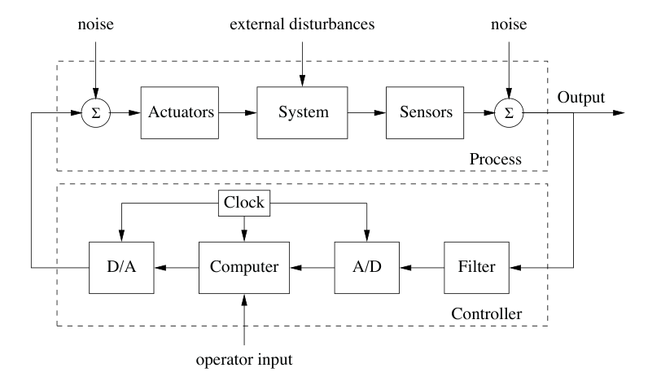
7.6 延伸阅读
可观性的概念来自卡尔曼 [115]。它与对偶概念可达性一起，是 20 世纪 60 年代开始建立状态空间控制理论的重要阶石。观测器最早以 卡尔曼滤波器的形式出现，离散时间情形见卡尔曼论文 [114]，连续时间情形见卡尔曼和 Bucy [116]。卡尔曼还猜想，输出反馈控制器可以通过组合状态反馈和观测器得到，见本章开头的引文。这个结果后来由 Josep 和 Tou [111] 以及 Gunckel 和 Franklin [93] 形式证明。组合后的结果称为线性二次高斯控制理论，Anderson 和 Moore [7] 以及 Åström [15] 的书给出了简洁处理。很久以后，人们发现鲁棒控制问题的解也具有类似结构，只是计算观测器和状态反馈增益的方法不同 [65]。第 7.5 节中结合反馈和前馈的一般控制器结构由 Horowitz 在 1963 年描述 [102]。图 7.10 中的具体形式见 [18]，该文也处理控制器的数字实现。伊藤在 1970 年提出，人类运动控制可能基于反馈和前馈的组合 [107]。
习题
7.1 坐标变换。考虑在坐标变换 \(z=Tx\) 下的系统，其中 \(T\in\mathbb{R}^{n\times n}\) 可逆。证明变换后系统的可观性矩阵为
因此可观性与坐标选择无关。
7.2 证明图 7.2 所示系统不可观。
7.3 可观标准形。证明如果系统可观，则存在坐标变换 \(z=Tx\)，把变换后的系统置于可观标准形。
7.4 自行车动态。自行车线性化模型由第 3.2 节式 (3.5) 给出，其形式为
其中 \(\phi\) 是自行车倾角，\(\delta\) 是转向角。给出系统可观的条件，并解释失去可观性的特殊情形。
7.5 积分作用。模型 (7.1) 假设输入 \(u=0\) 对应于 \(x=0\)。实践中，很难知道使状态或输出精确达到某个值的控制信号，因为这需要完全标定的系统。避免这个假设的一种方法，是把模型写成
其中 \(u_0\) 是未知常数，可建模为
把 \(u_0\) 看作附加状态变量，推导基于观测状态反馈的控制器。证明该控制器具有积分作用，并且不要求系统被完全标定。
7.6 矢量推力飞机。例 6.8 中矢量推力飞机的横向动态可通过考虑状态
描述的运动得到。通过把观测器特征值设置为 Butterworth 模式
来构造这些动态的估计器。把该估计器与例 6.8 中计算的状态空间控制器结合，画出闭环系统阶跃响应。
7.7 观测器唯一性。证明对单输出系统，通过特征值配置设计观测器是唯一的。构造例子说明，对多输出系统，这个问题不一定唯一。
7.8 使用求导的观测器。考虑线性系统 (7.2)，并假设可观性矩阵 \(W_o\) 可逆。证明
是一个观测器。说明它的优点是可以瞬时给出状态，但也有严重实践缺点。
7.9 Teorell 隔室模型的观测器。图 3.17 所示 Teorell 隔室模型具有如下状态空间表示：
代表性参数为
活跃于隔室 5 的药物浓度在血流中，也就是隔室 2 中被测量。确定哪些隔室可以由血流浓度测量观测到，并基于特征值配置为这些浓度设计估计器。选择闭环特征值 \(-0.03\)、\(-0.05\) 和 \(-0.1\)。当输入为脉冲注射时，仿真系统。
7.10 电机驱动的观测器设计。考虑习题 2.10 中电机驱动的归一化模型，其开环系统特征值为
习题 6.11 设计了一个状态反馈，使闭环系统特征值为 \(-1\)、\(-2\) 和 \(-1\pm i\)。为系统设计一个观测器，使其特征值为 \(-2\)、\(-4\) 和 \(-2\pm2i\)。把观测器与习题 6.11 的状态反馈结合，得到输出反馈，并仿真完整系统。
7.11 电机驱动的前馈设计。考虑习题 2.10 中电机驱动的归一化模型。设计图 7.10 中标为轨迹生成的方块，使输出 \(\theta\) 到参考信号 \(r\) 的动态满足
其中
讨论单位阶跃命令下，命令信号最大值如何依赖 \(\omega_m\)。
7.12 Whipple 自行车模型。考虑第 3.2 节式 (3.7) 给出的 Whipple 自行车模型。习题 6.12 已经为该系统设计了状态反馈。为系统设计观测器和输出反馈。
7.13 离散时间随机游走。假设希望估计一个在一维中，也就是沿直线，进行随机游走的粒子位置。把粒子位置建模为
其中 \(x\) 是粒子位置，\(u\) 是白噪声过程，满足
假设可以测量 \(x\)，但测量受加性、零均值、高斯白噪声污染，噪声协方差为 1。
(a) 计算粒子位置随 \(k\) 变化的期望值和协方差。
(b) 构造 卡尔曼滤波器，用带噪声的位置测量估计粒子位置。计算估计误差的稳态期望值和协方差。
(c) 假设 \(E\{u[0]\}=\mu\ne0\)，其他条件不变。你对 (a) 和 (b) 的答案会怎样变化？
7.14 卡尔曼分解。考虑由下面矩阵刻画的线性系统：
为该系统构造 卡尔曼分解。提示：尝试对角化。